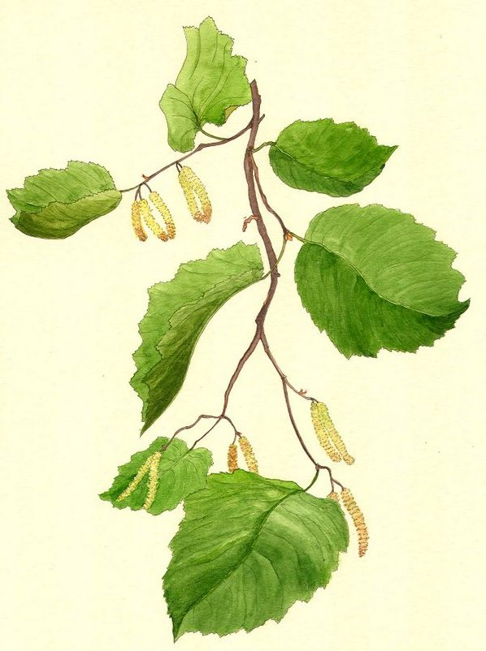

Golcorone
dopant (infusion) - 30 po
↪ plante - forêt - été
↪ plante - forêt - été
 Les feuilles de cet arbuste sont très recherchées. On en tire en effet une infusion que les apothicaires recommandaient initialement pour stopper les tremblements. Mais les archers qui ont eu accès à cette préparation se sont rapidement rendu compte qu'elle améliorait également leur rendement, à tel point que de nos jours de nombreux concours de tir à l'arc en interdisent son usage. Les archers d'élite de Laelith en auraient un petit stock qu'ils utiliseraient pour des missions de haute importance.
Les feuilles de cet arbuste sont très recherchées. On en tire en effet une infusion que les apothicaires recommandaient initialement pour stopper les tremblements. Mais les archers qui ont eu accès à cette préparation se sont rapidement rendu compte qu'elle améliorait également leur rendement, à tel point que de nos jours de nombreux concours de tir à l'arc en interdisent son usage. Les archers d'élite de Laelith en auraient un petit stock qu'ils utiliseraient pour des missions de haute importance.
Une infusion de golcorone donne un bonus de +1 aux attaques à distance réalisées avec une arme qui utilise des munitions (arc, arbalète, sarbacane, etc) pour une durée de 1 minute.

Illustration reproduite avec l'aimable autorisation de Christine Achard
Illustration reproduite avec l'aimable autorisation de Christine Achard
Recueil des plantes d´AideDD